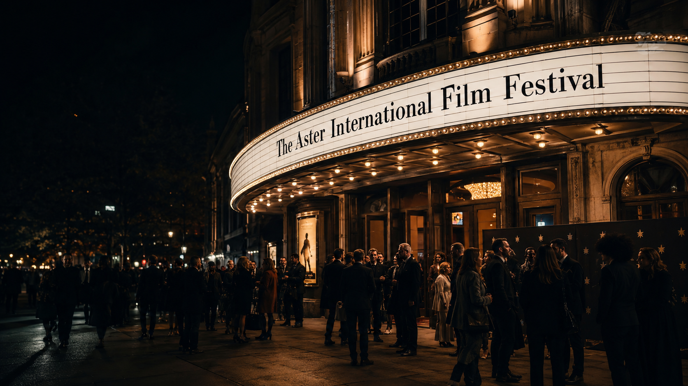

01
Flagship Festival
The Aster
The Society’s curatorial vision, expanded into a festival.
Featured program
Merit. Curation. Hospitality.
The Aster is Georgia Film Society’s flagship festival: selective, discovery-minded, filmmaker-respecting, and built around a carefully shaped guest experience.
It gives the Society a festival platform while the broader institution continues year-round through screenings, salons, education, writer programs, partnerships, and public conversation.